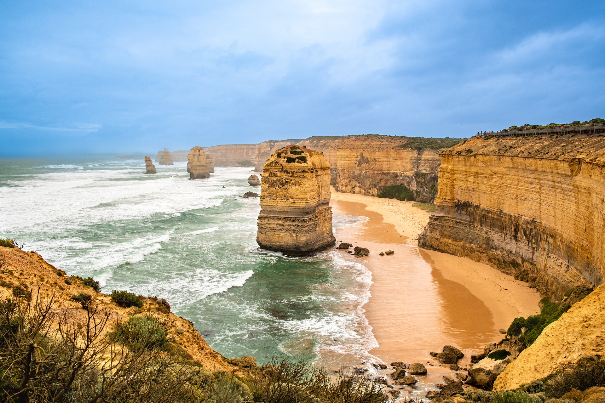
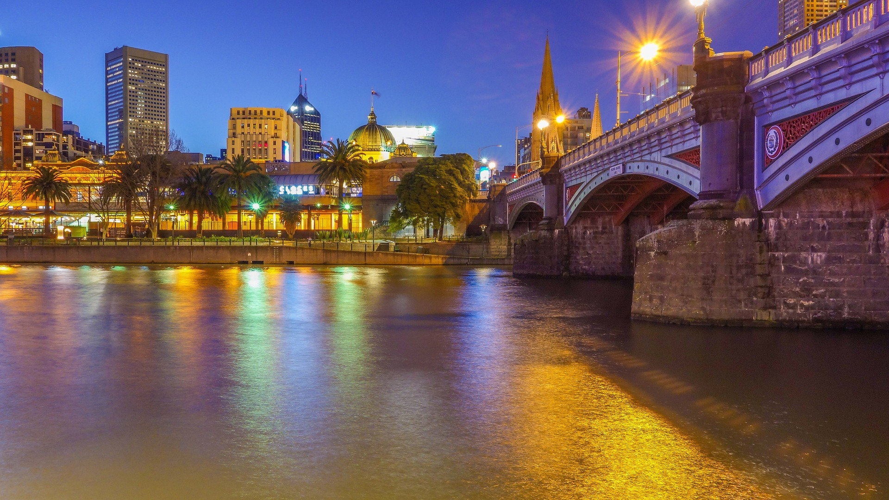

All About Great Ocean

The Great Ocean Road travelling to the seaside city of Warrnambool on a small luxury tour with
your friendly local guide departing Geelong. This is a three day/two night tour.
The journey begins as your local guide entertains you with local stories and
history as you wind your way down the breath taking Great Ocean Road.
Stopping along the way you will discover it’s past and experience it’s today.
Sample the seafood at the local fishing towns. As you hug the cliffs check out
the surfers taking on the Southern Ocean.
Read More
Melbourne Winter Masterpieces

Get set for this year's Melbourne Winter Masterpieces,
with two vastly different but equally thrilling blockbuster
exhibitions, showing right through to October.
Pierre Bonnard: Designed by India Madhavi
NGV International – 6 June to 8 October 2023
Pierre Bonnard is one of the most beloved painters of the
20th century, celebrated for his use of colour to convey an
exquisite sense of emotion.
Melbourne Winter Masterpieces exhibition Pierre Bonnard:
Designed by India Mahdavi presents the iridescent paintings
of Bonnard within immersive scenography by award-winning architect and designer,
India Mahdavi.
Read More
Winter Events in Melbourne

Make Melbourne your main event this winter.
Few stage shows are more spectacular than Moulin Rouge!
The Musical, returning for a limited season at the Regent Theatre.
And don't miss pop-tastic remix musical & Juliet,
a coming-of-age story that turns Shakespeare's tragedy on
its head, or the stellar production of Harry Potter and
the Cursed Child.
Kick off the winter sporting calendar with the
Bledisloe Cup at Melbourne's iconic MCG.
Read More